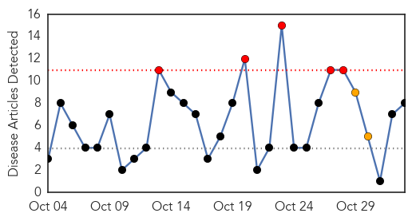
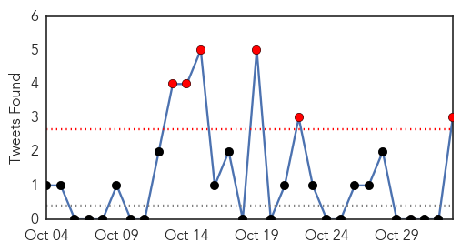
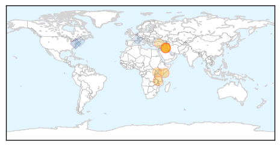
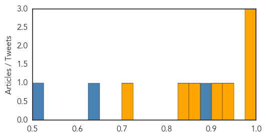

Toggle navigation
Early Warning
Daily Alerts
Cholera
Nov 02, 2015
Compare to:
-
Dengue Fever
Hemmorhagic Fever
Mold/Fungal Infection
Influenza
Meningitis
Pertussis / Whooping Cough
Middle East Respiratory Syndrome
Hepatitis
Chikungunya
Yellow Fever
Bubonic Plague
West Nile Virus
Swine Flu
Ebola
Measles
Unknown
Mumps
30 Day Trends
Web: 5
alerts
, 2
warnings
Twitter: 6
alerts
, 0
warnings
Top Articles:
0.993
Cholera Is Coming
0.983
WHO pre-positions emergency supplies in Somalia in preparation for El Niño
0.983
Iraq combats cholera with massive vaccination campaign
0.949
Leprosy resurfaces in Malawi
0.916
Iraq Carries Out Vaccination Campaign To Combat Cholera
0.863
OIC Summit Addresses Challenges of Women Investors
0.830
WHO sends oral cholera vaccine to Iraq
0.706
Cholera in Syria: Is Europe at risk?
Top Tweets:
0.895
RT: In response to cholera outbreak, Mozambique health official states improving sanitation will help prevent disease ht…
0.779
WHO mobilized 510,000 doses of oral cholera vaccine to help control the outbreak in Iraq https://t.co/iDaTJJcYwS
0.546
Iraq Health Ministry decided to supplement the ongoing cholera control measures with the oral vaccination campaign https://t.co/2XlUEiqDDQ
0.511
: Where immunity "impacts individuals and communities, there are huge issues of anomaly and hypocrisy" Haiti cholera
0.508
To help control t/ cholera outbreak in Iraq, WHO & partners started a vaccination campaign https://t.co/2XlUEiqDDQ https://t.co/lt4cC8eKwW
Web/News Articles

Tweets

Article Locations

Article Confidences
